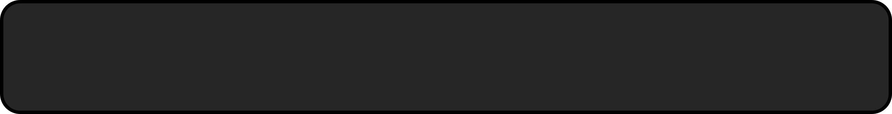
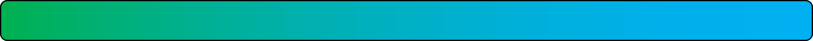
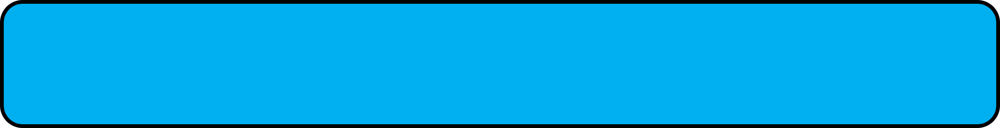
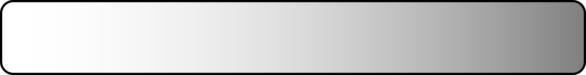
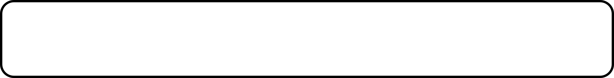
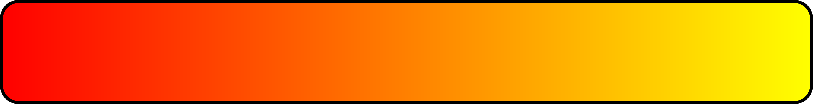
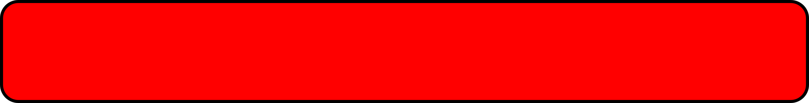
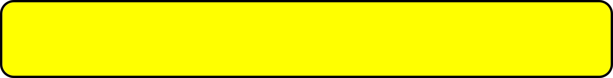

Painting activity with Exhibits and Collections
At Language Day Camp 2023, SSBMI Exhibits and Collections Center staff will host a painting activity where we will learn about Nisenan and Miwok color words and about how color categories themselves can differ across languages.
As English speakers, we have learned to think of "green" and "blue", "red" and "yellow", "white" and "gray", etc. as different colors. However, languages frequently differ in how they divide the color spectrum into categories and thus also in the color words that they use. Some languages make fewer distinctions among color words than English does (e.g. many languages do not have different words for "green" and "blue"), while other languages make even more distinctions (e.g. some languages have unique words for "light blue" versus "dark blue"). We can see that this is the case when we compare Nisenan, Miwok, and English!
For example, in Nisenan the same word "koc’ís" names both "green" and "blue", while the same word "p’anáanak" names both "red" and "yellow". Similarly, in Miwok the same word "cokókki" can mean both "green" and "blue", although there is also a separate word "mulúlli" for "blue" in Miwok. You can listen to audio recordings of these and other Nisenan and Miwok color words below:
| Nisenan | Miwok |
 |
|
Kɨlɨ́m (black) |
Kulúlli (black) |
 |
|
Koc’ís (blue-green) |
Cokókki (blue-green) |
 |
|
Mulúlli (blue) |
|
 |
 |
Kow (white-gray) |
Kelélli (white) |
Ṭopóppi (gray) |
|
 |
 |
P’anáanak (red-yellow) |
Weṭéṭṭi (red) |
 |
|
Ṭayáyyi (yellow) |
As you learn color words, you should keep these kinds of differences in mind!